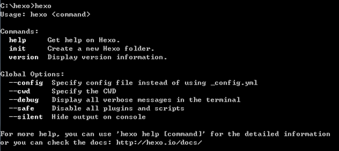
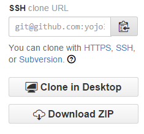

終於下定決心要弄個 blog 紀錄學習過程了，就算是因為看了大大們都有寫自己的 blog 想要模仿一下假裝自己好像追上了一些也沒關係的，總之一切就從這篇文章開始吧！
從最一開始自以為要手爆程式碼到認識 wordpress，joomla 到接觸 yii，laravel framework，到現在找到這個比較簡單又不用維護 Server 又沒有什麼廣告又免費的建置工具，開心之餘心中的第一個想法是感謝這些機構提供窮人們紀錄自己的成長歷程的地方，先拜再說吧<(_ _)>
前置作業
總而言之言而總之，來談談 Hexo 吧
Hexo 是個強大的 blog framework，讓使用者撰寫最少的程式碼或是標籤語言建立屬於自己的 blog
目前紀錄的 Hexo 版本為 3.0.1 版，若有意參照以下環境建置過程者自行確認版本號囉
安裝 Hexo 之前需要先安裝 Node.js，
請選擇符合您作業系統的版本，之後安裝 Hexo 會用到的~
什麼是 Node.js 呢? 我的理解上他是個把原來用於前端的 javascript 拿來建置成後端環境，至於 Node.js 和傳統 PHP + Apache 的比較請參考這篇文章
PHP+Apache vs. Node.js大車拼
安裝完 Node.js 之後要來介紹一下 npm
npm 是 javascript 的套件管理器 (Node Package Manager) ，預設的使用環境是 Node.js，使用者可以透過 npm 輕鬆的安裝支援的套件，而 hexo 也能透過 npm 快速的安裝
首先開啟 node.js command prompt (Windows 環境中可在 start menu 中的 Node.js資料夾中找到他)
依照 Hexo 官網 的指令安裝
首先安裝 hexo-cli (version 3 以上版本新增)1
npm install -g hexo-cli
接著安裝 Hexo1
npm install –g hexo -–save
完成後輸入 hexo 檢查是否成功安裝 Hexo (若出現下列參數選項即為成功)

到目前為止已經成功的建立 Hexo 環境了，在撰寫第一篇文章之前要先建立 github web page
關於 github page 相關訊息請看下列文章
Github.io web page
建立 github web page 的理由是我們現在要把 Hexo 生成的網頁樣式套用在 github 提供的免費網頁空間中，因為雖然 github 網頁也提供了預設樣式可以套用，但是 Hexo 的功能更強大，更加客製化
執行下列指令創建一個 blog
(選擇想要放置 blog 檔案的位置，我自己是習慣放在雲端硬碟的同步資料夾裡面順便備份)1
hexo init "your blog name"
利用 cd 指令進入該 blog 資料夾中後輸入下列指令1
npm install
如此一來這個資料夾裡面就會多出許多檔案及資料夾，這些東西就是預設生成的最基本的 blog
我們要把這些 hexo 生成的檔案同步至 github web page 上，因此我們要設定 blog 資料夾中的 _config.yml 檔案，讓本地端的 hexo 知道我們要連線的 github 是誰
首先設定 url 和 root 欄位，url 指定為你的 github web page 的網址即可，應該都是固定格式 http://"account".github.io/
root 欄位可以填寫 / 即可，若是網站要放在子目錄裡面 e.g.: xxx.xxx.xxx/“子目錄”，那 root 就要寫成 /“子目錄”
1 | url: http://"account".github.io/ |
接下來填寫最底下的 deploy (佈署) 欄位，此欄位用來設定 github 連線及更新網站所需資料
1 | deploy: |
在 2.x 的版本中 type 要填入 github，但是在第 3 版中改成了 git

上方圖片中方框中的文字即為 ssh url，在 github 中隨便一個專案頁面裡面都可以找到他，其實 ssh 和 https 都可以使用，而兩個的差別就在 https 連線每次都要輸入密碼，這其實頗為煩人，因此建議使用 ssh 連線
暫停一下!!!，光是複製這個 ssh url 是不夠的，試想若是任何人使用這個固定格式的 url 就能連線至 github 的話未免也太不安全，其固定格式就是 git@github.com:”account”/“account”.github.io.git，要知道一個人的 github 帳號頗為容易，因此必須產生一組只適用於該機器的 ssh 公開金鑰 (public key) 給 github 供認證使用，就參考下列官方文件設置一下吧
注意!! 完成設定之後要安裝一個 plugin1
npm install hexo-deployer-git -–save
從字面上的意思就知道要新增一個佈署項目 git，如果沒有安裝的話每次更新網頁就會噴錯說看不懂 git 是誰，因此務必要安裝才行~
新增文章
折騰了這麼久，終於可以開始新增第一篇文章了，利用 cd 指令進入 blog 資料夾之後新增文章1
hexo new "hello world"
這篇文章會被存在 blog/source/_post 裡面，文章的格式是 markdown(.md) 檔案
於是乎就產生了一篇名字為 hello world 的空白文章了，執行指令:
1 | hexo s |
這個指令可以啟動預覽網頁的伺服器，可以利用該功能完成文章及內容排版之後在正式上線至 github web page
執行後在瀏覽器上輸入 http://localhost:4000 即可看到預覽的網站，撰寫文章的過程中只要繼續執行 hexo server 指令，儲存文章之後就能即時看見更改結果了
接著就來說一下 markdown 語言吧，markdown 和 html 一樣是個標記語言，其存在的最重要的意義就是讓懶人們少寫一點 html tag，由於 markdown 最終還是會被轉化成 html，因此在 markdown 中寫 html tag 是完全可行的，如果懶得查 markdown 的某些表示方法大可以直接寫 html
在此提供一個 Windows 下免費的 markdown 編輯器
MarkdownPad
此編輯器會即時預覽撰寫的 markdown 語法
markdown 語法請看這邊
文章撰寫完成後接下來就是上線啦，先根據修改產生靜態網頁1
2hexo g
(意同於 hexo generate)
佈署網頁同步至 github1
2hexo d
(意同於 hexo deployer)
如此就能在你的 github web page url 看到修改過的 blog 囉，預設的 url 應該都是 http://"account".github.io
主題風格
hexo 提供了不少推薦的主題供使用者套用，這些主題都放在 github 上免費讓所有人下載，可以依據 blog 的形式來決定要套用的主題 (hexo 預設的主題為 landscape)
hexo 主題一覽
從 github 上將主題下載解壓縮成目錄後放在 blog 資料夾中的 theme 資料夾
接著再編輯 _config.yml 檔案，將其中的 theme 參數設定為該主題的資料夾名稱即可
第一篇文章終於告個段落了，總覺得我寫得有點囉嗦，但是我認為 blog 不只是紀錄自己的學習過程，另外一方面也是提供經驗供新人學習，一路走來我也是靠著網路上有人願意分享心得才讓我小有成長，取之於網路必須有所回饋達成良性循環，單純的紀錄步驟不說明前因後果沒有什麼意義，不過是做做樣子罷了，希望接下來的文章不要再花那麼多時間啦